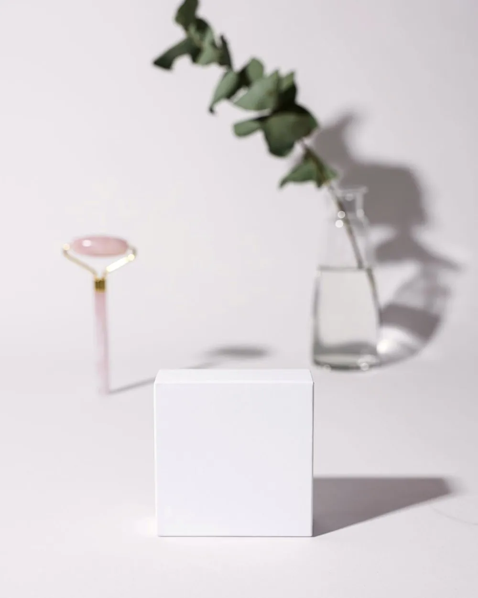
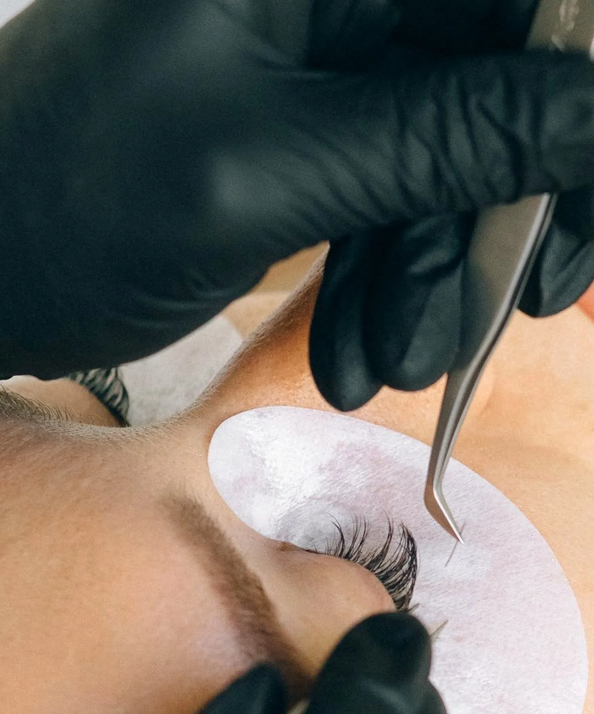

Bridal guide · Timing
Lash extensions are one of the few parts of wedding-day beauty you can finish days in advance and then forget about. They only work that way if the timing is right, and the most common mistake is leaving the first set until the week of the wedding.
Six to eight weeks out: patch test and a trial set. Never wear a style for the first time on your wedding day. A trial set tells you whether you like the look, how your eyes take to the adhesive and how the set wears over a fortnight, with time to change your mind.
From then on: refills every two to three weeks. This keeps the set going and lets the shape be adjusted. A little longer at the outer corner, a little lighter overall, whatever the trial showed.
Three to five days before: the final refill. Not the day before and never the morning of. Three to five days lets the set settle, covers the 24 hours it has to stay dry, and leaves room to fix anything that is not sitting right.
If the wedding is under three weeks away and you have never had extensions, it can still be done. Book the patch test now and a full set three to five days before the day.
Choose a classic or hybrid set. This is not the week to find out how mega volume feels.
Classic gives definition and reads as your own lashes, only better. It suits a natural or minimal makeup look and is the safest choice if you do not usually wear much.
Hybrid adds texture and fullness without looking heavy. It is a good middle ground if you are torn between the other two.
Volume is denser and darker at the lash line, which holds up well alongside a full evening makeup.
Whatever you choose, do not go heavier than you have worn before. You want to recognise yourself in the photos. The styles are compared side by side in classic, hybrid or volume.
This is where extensions earn their place. There is no mascara to run and no strip lash to lift at the corner halfway through the speeches.
If you cry, and most people do, dab under the eye with a tissue and do not wipe across. Cured extensions are not bothered by tears.
Tell your makeup artist you are wearing them. That means oil-free products around the eyes, no lash curler, no strip lashes glued on top and no waterproof mascara. A good artist will know all of this already.
The final refill before the wedding normally carries you through the first week or so away. Sun, salt water and sunscreen are harder on a set than ordinary life, so rinse with fresh water after swimming and keep oily sunscreen away from your lash line. There is more in swimming with lash extensions.
The studio books one client at a time, so a bridal party is a run of separate appointments rather than a group session. That is easy to arrange with notice and hard to arrange without it. If bridesmaids or mums want lashes too, ask early so the appointments can be lined up across the same few days.
A trial full set is the normal price: $120 classic, $140 hybrid, $160 volume. Refills between the trial and the wedding are from $60 each.
If you would rather not wear extensions at all, a brow shape and tint with a lash tint is $60. It can be booked on its own and makes a quick, low-commitment refresh a few days before the day. Everything is listed on the services page.
Questions
Have a trial set six to eight weeks before, keep it going with refills, and book the final refill three to five days before the wedding. Avoid the day before and the morning of.
Strip lashes are applied on the day and can lift with tears or heat. Extensions are done days ahead, do not lift and need nothing on the morning. Extensions suit you if you want one less thing to think about. Strips suit you if you want a look for one day only.
Yes. Once the adhesive has cured, tears do not affect it. Dab under the eye with a tissue rather than wiping across the lashes.
Yes, and most prefer it. Let them know beforehand so they use oil-free products around the eyes and skip the lash curler, strip lashes and waterproof mascara.
A lash tint darkens your own lashes so you can go without mascara. It is available as an add-on, or on its own as part of the $60 brow shape and tint with lash tint package.
Keep reading

Yanchep · new clients welcome
Getting married? Start with a patch test and a trial set six to eight weeks out.